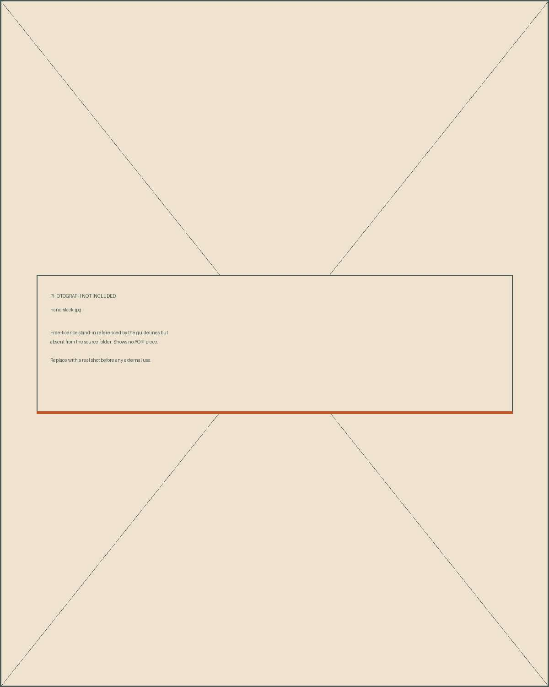

This whole page is superseded. All four treatments were answers to the wrong question. The resolution is Image jobs: painting and photograph do different jobs and never occupy the same slot. Nothing here needs a decision.
The nine positions were all about arrangement — where a photograph sits relative to a painting. That was the wrong question, which is why none of them felt seamless. A photograph reads as pasted on for four reasons that have nothing to do with placement: it has a hard rectangular edge, it contains values darker and lighter than any wash does, it carries no paper grain, and its colour is unmediated. Move it wherever you like and all four survive.
So treat the surface instead. Four treatments below, each one addressing a single cause, then the combination. Every demo is the same stand-in photograph on the same painting so you can judge the treatment and nothing else. Left is untouched; right is treated.
The single biggest cause. A watercolour on toned paper has no true black and no true white — its darkest value is a loaded wash, its lightest is the paper. A photograph has both extremes, and the eye reads that extra range as a different material. Pull the blacks up and the whites down until the photograph occupies the same span the paintings do. Nothing else changes: no colour shift, no texture, no soft edge.
The paintings all sit on cotton paper and the grain is visible in every one of them. A photograph has the grain of a sensor, which is to say none. Print the photograph onto the same sheet: a neutral grain scan laid over the image in soft light — no colour of its own, so it adds tooth without adding a pattern — and one continuous surface then runs across both. This is what letterpress and risograph do, and it is the reason a printed catalogue feels unified when a screen does not.


A wash has no boundary — it thins out and stops. A photograph has four straight sides and four right angles, and that rectangle is what announces it as an insert. Take the rectangle away: feather the image into the page along an uneven soft edge so it ends the way a wash ends. The photograph is then on the paper rather than on top of it.


A translucent pass of the brand's own pigments laid unevenly across the print — teal pooling in one corner, terracotta in another, the way a wash actually settles. Not a flat tint and not a duotone: the photograph keeps its own colour underneath and picks up the palette on top. This is the treatment that makes a photograph look like it was made in the same room as the paintings.


Applied together, dialled back. Here is the nine-tile test — mixed paintings and treated photographs, no captions. It does not pass, and it is not close.

Every treatment on this page makes the photograph quieter — narrower range, softer edge, more paper. But look at the paintings: they are maximum chroma with a hard ink contour on white paper. They are the loudest thing in the system. So each treatment moved the photograph further from them, not closer. The four causes named at the top of this page were the wrong four.
The real gap is chroma and line. A photograph of skin and silver is inherently low-chroma and has no contour; these paintings are pure saturated wash bounded by drawn line. To close that gap the photograph would have to be converted into flat washes with a drawn edge — and I tried that twice, procedurally, at pixel level. Both attempts produced a lurid orange posterisation, not a watercolour. Convincing that conversion is an image-generation job, and I cannot generate images. I am not going to keep tuning parameters toward something that needs a different tool.
Four routes that do not depend on faking a medium. Two cost artist or studio time; two cost nothing but a decision.
No photography in the brand at all. Forty-six paintings is already a complete visual system, and plenty of jewellers run entirely on illustration. Photographs exist only on a plain specification panel — measurements, hallmark, finish — where nobody expects beauty and a sharp true-colour image is what the customer actually wants. Costs nothing. Available today.
Send the artist the actual jewellery and have her paint it in the same hand as the places. Then there is nothing to blend, because the product imagery is painting. This is the answer the brand is really asking for. Costs artist time — one painting per piece.
Blend it in camera instead of in software. Lay the pieces on a real painted sheet, or shoot against a painted backdrop, in daylight. The paper grain, the wash colour and the light are then genuinely shared because they are genuinely the same surface. This is what every good craft brand does. Costs one afternoon and a painted sheet.
Stop trying to reconcile them. The painted world carries the romance — place, collection, story, packaging. The photograph carries the evidence, on a deliberately clerical stone-and-hairline sheet. The contrast becomes the brand's signature rather than its problem. Costs nothing. This is the receipt logic the system already runs on.
My recommendation is 3 now and 2 over time: shoot the next run on painted paper so the shop pages work this month, and commission paintings of the signature pieces so the hero imagery becomes painting permanently. Route 4 is the fallback if neither is possible, and it is a legitimate answer rather than a compromise.
Kept so you can see the treatment at working size and judge it yourself. Note that the header is a painting and the four tiles are treated photographs — the row below the header is exactly where the mismatch shows.

Kept as a record of the abandoned line of thinking, not as a proposal. Section 05b replaces it. The right-hand column is the part that survives — it applies under whichever of the four routes you pick.
assets/textures/paper-grain.png, already generated.Why it is moot: the treatment closes the wrong gap. Cheap and easy is not worth much when the result still reads as a photograph pasted onto a painting.
This holds under all four routes. Even route 1, where the paintings carry the brand, needs plain photographs on the specification panel.